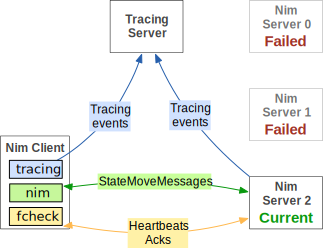
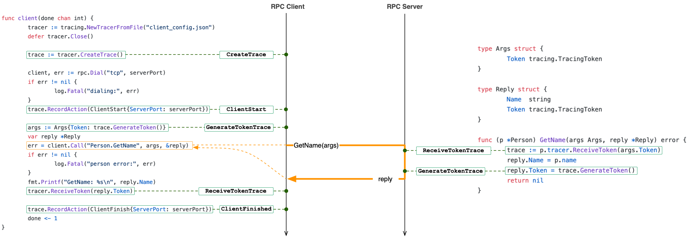
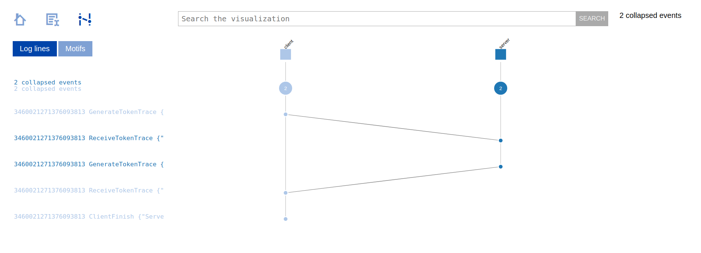
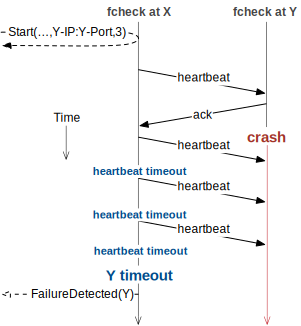

416 Distributed Systems: Assignment 2 [Traced nim, fcheck lib, Robust nim]Due: February 8 at 6pm PSTWinter 2022
|
|
This is a multi-part assignment that builds on the the nim client that you have developed in A1. By the end of this assignment, your nim client will be able to cope with server failures and you will be able to visualize an execution of your system across multiple nodes. Note that this is the last solo assignment (A3 and the projects will require team work). In this assignment you will work on three parts:
Assignment overviewPart 1: Distributed tracing support. So far, you have been tracing local actions from your nim client. The resulting trace is a totally ordered trace of client-side actions. It is useful for understanding nim client behavior, but it does not provide visibility into the rest of the system. In this part of A2, you will add distributed tracing support, which will allow the tracing server to observe tracing events not just from your nim client, but also from the nim servers that your client communicates with. You will also be able to visualize the resulting trace using the ShiViz tool. Introducing distributed tracing support will require a change to the packet format and in how you use the tracing library. Part 2: Failure checking library. Distributed systems are frequently designed to deal with failures. There are many kinds of failures (hardware/software/network/etc). In this assignment you will focus on node failures. In this part of A2 you will design a library for failure detection (fcheck). This library will monitor a remote node and will be able to notify the local library client when the remote node has failed. Note that real distributed systems, including those you will build in this course, operate over networks that are asynchronous and unreliable. This makes true node failure detection impossible: you cannot distinguish the failure of a node from the failure of the network. Therefore, your fcheck will provide best effort failure detection. You will structure fcheck as a library that can be re-used across projects (you will use it in A3). Your library must integrate a simple round-trip time estimator and use a UDP heartbeat protocol. Part 3: Dealing with nim server failures. In A1 your client code assumed that the server does not fail. We will remove this assumption in A2. Once you have built the fcheck library, you will use it in your nim client. Specifically, you will (1) use fcheck to monitor the current nim server that your nim client is connected to, (2) use fcheck to detect when this nim server has failed, and (3) add fail-over behavior to your client to use a new nim server when the current nim server has been detected as failed. After failing over to a new server, your nim client should begin monitoring the new server with fcheck, and fail-over again if necessary. The three parts above build on one another: the fcheck library must support distributed tracing and record certain actions, and the failover process must use the fcheck library. We recommend starting on a part i+1 only when you have completed part i. The new nim servers that we will allow you to test against will help you implement each of the parts. These nim servers all expect distributed tracing. You can use a non-failing nim server to test your work in part 1. To test your fcheck from part 2 you can use a non-failing nim server and a nim server that sometimes fails and restarts. Finally, to test part 3 you can use a collection of nim servers, each of which eventually fails and restarts. 1.1 Distributed tracing supportWe begin with a description of distributed tracing because this will be a powerful new tool in your debugging toolbox. You will also use distributed tracing in A3 and in P2, so it's a good idea to understand it well. You will retain the basic nim protocol, but you will augment it with distributed tracing. What this means in practice is that the UDP messages will include some additional information. You will also need to add more tracing library calls/logic to your code. Distributed tracing, which is available in the same tracing library you used in A1, introduces two new features: (1) the notion of a trace with which recorded actions are associated, and (2) vector clock timestamps to track the happens-before relationship (if any) between actions across nodes. These two features require a slightly different way of thinking about tracing in your system.
You already know that a trace is a set of recorded actions
that are associated with a unique trace ID. With traces,
actions must be recorded as part of traces. So, you must first get
access to a trace and then you can record an action
(i.e., For a detailed description of the distributed tracing API, please see the go doc documentation for the tracing library. 1.2 Message FormatIn A2 the [StateMoveMessage] is updated to look as follows:
type StateMoveMessage struct{
GameState []uint8
MoveRow int8
MoveCount int8
TracingServerAddr string
Token TracingToken
}
In each message: [GameState], [MoveRow], and [MoveCount] have mostly identical semantics as in A1. The key semantics change is that during fail-over to a new nim server, the client should send its last valid move with the appropriate GameState, MoveRow, and MoveCount fields values to the new nim server. That is, during fail-over mid-game the client should not send an opening message to the new nim server. When starting a new game, however, the client must send an opening move message, as before in A1. There are two new tracing-related fields in the StateMoveMessage struct above:
In this assignment the nim server will use the tracing server specified by the client in each StateMoveMessage. It is important that the TracingServerAddr and Token fields are both set correctly in every message to the nim server. If these fields are incorrect -- e.g., if the nim server cannot connect to the specified tracing server or cannot deserialize the token, then the nim server will either (1) respond with its previous move, or (2) not respond if this is the first message that the nim server has received from this client. Because the nim server uses the tracing server that the client tells it about, StateMoveMessage packets from the nim server will specify an identical tracing server in the TracingServerAddr field. However, the Token field will always be different. The client, must deserialize the received token right after receiving a StateMoveMessage from the nim server, and the client must use the resulting trace object (from the deserialized token) in its later tracing commands. Note that in this assignment you will augment the nim protocol from A1 with distributed tracing. You will not, however, trace the messages sent by the fcheck library. Though you will record several new actions related to failure detection. 1.3 End-to-end example of distributed tracing + ShiVizA key feature of distributed tracing is that now all actions include not just physical timestamps but also vector clock timestamps. These vector clocks timestamps allow us to reconstruct the happens-before relation between recorded actions. This relation will look like a DAG with vertices associated with different nodes in your system. The tracing library's output supports a visualization tool, called ShiViz, that you can use to visualize the recorded DAG of events.
Let's consider a simple example. This example consists of a client and
a server. This example uses RPC, but it is identical in spirit to the
UDP description above.
The client invokes an RPC on the server and then the server
returns the response to the client. You can find the
implementation here. This
implementation also illustrates how to use the distributed tracing API
described above. To run this example, you can run Notice the use of distributed tracing
in main.go
of the above example. The caller generates a token, passes it to
the  The tracing server also generates a ShiViz-compatible log that can be used with ShiViz to visualize the execution of the system. This log file is defined in the tracing server configuration file as ShivizOutputFile, which has the "shiviz_output.log" value by default.
We can upload the generated ShiViz log, i.e.,  2.1 Detecting failures with the fcheck libraryIn this assignment, the nim server your client communicates with may fail. However, the A1 client protocol continuously re-transmits a message that has not been replied to every 1 second, indefinitely. The client needs (1) a way to detect that the server has failed, and (2) needs to respond to server failures. The fcheck library that you must develop is used for failure detection. This is the focus of part 2 of A2. The fail over algorithm to using a new nim server is described in part 3 of A2, further below. The basic idea of the fcheck library is that it can be imported and used by code in one node to detect if another node, that is also using the fcheck library, has failed or not. The fcheck library uses a simple heartbeat-ack protocol that resembles the nim protocol you implemented in A1. fcheck is application-independent, and even though you will use it in your nim server, you should build it in a way that allows you to re-use it in A3. In the fcheck library a node may optionally monitor one other node and also allow itself to be monitored by any number of other nodes. In A1, your client will monitor a single nim server (the one the client is currently connected to). Some of the nim servers that the client will connect to will also monitor your nim client. Monitoring means that the monitoring node actively sends heartbeat messages (a type of UDP message defined below) to check if the node being monitored has failed, or not. Upon receiving a heartbeat, fcheck must respond to the sender with an ack message. Failure is determined/defined based on some number of heartbeats that have not been acked. The exact policy is described below. Note that your fcheck library should respond to a heartbeat message regardless of which node sent the heartbeat (the current nim server or some other server).
The following diagram illustrates an example four node system and the
failure monitoring relationships between the nodes with the fcheck
(fc) library. In the diagram, Nodes 1 and 3 monitor Node 2 (e.g., Node
1 sends heartbeats and receive acks). Node 2 does not monitor any
node. Node 4 monitors Node 3 but is not monitored by any node. Note
that a single instance of the fcheck library may monitor zero or one
node, and may be monitored by zero or more nodes. 2.2 fcheck APIYour fcheck must provide the following API. Note that below, each call (Start or Stop) invoked by the client must run to completion and return before another invocation by a client can be made. For presentation purposes we list two distinct Start functions below. In the starter Go code, however, there is just one Start function that takes a struct that can be used to determine if the first or second variant of Start is intended. Note that Start can be invoked multiple times, but Start must be invoked first (before Stop) and calls to Start must alternate with calls to Stop. Below, if err (of built-in error type) is nil then the call must have succeeded, otherwise err must include a descriptive message of the error. There are no constraints on what the error message is, the exact text does not matter.
Notification semantics:
2.3 The fcheck protocol on the wireThe heartbeat and ack messages in your fcheck implementation must have a specific format:
type HBeatMessage struct {
EpochNonce uint64 // Identifies this fcheck instance/epoch.
SeqNum uint64 // Unique for each heartbeat in an epoch.
}
type AckMessage struct {
HBEatEpochNonce uint64 // Copy of what was received in the heartbeat.
HBEatSeqNum uint64 // Copy of what was received in the heartbeat.
}
 Note how fcheck at X resends the heartbeat message (after an RTT timeout) exactly three times (based on the lost-msgs-thresh value of 3 passed to Start). After three heartbeat messages have all timed-out, fcheck at X times out node Y and generates a failure notification. Your fcheck must implement this behavior precisely. In general, your timeout mechanism should behave as follows:
2.4 Round-trip time (RTT) estimationLatency between nodes varies. We want the failure check library to detect failures in networks with a wide range of latencies. We also want to minimize the chance of a false positive (spurious failure detection event). Your library must wait for a monitored node to reply to a heartbeat with an ack (stop-and-wait protocol). This means that there should, at most, be one heartbeat message in the network from a monitoring node to a monitored node. Only if the node does not reply in RTT time, then should the library send another heartbeat. How long should the library wait for a reply? Depending on where the node is physically located, the wait time will have to vary. Your library must implement a simple RTT estimator to customize the waiting time for the node being monitored. Note that this waiting time may vary for different heartbeat messages. Your RTT estimator should work as follows:
Example scenario. Let's say the first heartbeat was sent at time 1 with RTT value of 5, and an ack for this heartbeat arrived at time 2. Then, the second heartbeat should be sent before time 6 (=5+1). In this example, since the heartbeat was sent at time 1 and the ack was received at time 2, the computed RTT for this heartbeat-ack pair is 1. The new RTT for the connection must be updated as RTT' = (RTT + RTT-measurement) / 2 = (5 + 1) / 2 = 3. When the next heartbeat is sent at time 6 its re-transmission should occur at (6 + RTT) = (6 + 3) = 9. 3.1 Detecting nim server failures and failing over to a new serverNow that you've completed the fcheck library, it is time to integrate it with your nim client. The integration is simple: before your nim client connects to the nim server (sends an opening move), it should begin monitoring the nim server. When fcheck notifies the client that the nim server has failed, the client should fail over and use another nim server. That is, it should invoke Stop on fcheck, select a new nim server, invoke Start to monitor the newly selected nim server, and attempt to continue the nim game with the new nim server. The spec in A1 needs to be adjusted in the following ways to support fail over:
Multiple nim servers. The client's configuration file will include a list of nim servers the client should use. This list will be ordered and will include at most 8 nim servers. Selecting the next nim server. The client should use the round robin policy for failing over: it should choose the next server in the list specified in the config file. If it reaches the end of the list, it should continue by selecting the first nim server in the list (that by now might have come back up). Resuming the game with a new nim server. When failing over to a new nim server, the client should send its last valid move with the appropriate GameState, MoveRow, and MoveCount fields values. The client should not send an opening message to the new nim server if it already started a game with another nim server. However, if no game was started (the client has not previous received a StateMoveMessage from any nim server), then the client should send an opening move message to the server to which it fails over. When all the nim servers are down. If the client has attempted all the nim servers in the input servers list, and all the servers were reported as failed by the fcheck library, then the client should record the action AllNimServersDown and then exit. Note that if the servers list is of length N and the client was interacting with a non-failed server i (i < N), then the client must have (1) detected server i as failed, as well as (2) detected all servers j, j>i and j≤N, as failed without any StateMoveMessages from these servers, as well as (3) detected all servers j, j<i, as failed without any StateMoveMessages from these servers before recording AllNimServersDown and exiting. New tracing actions. Your A2 solution must trace three new trace actions on the nim client:
And, as a reminder, your implementation should continue to emit the tracing actions defined in A1:
Tracing SemanticsYour solution must precisely follow the tracing semantics described below. Your grade depends on the type of tracing log that your solution generates. For example, if traced actions are in the wrong order, or are missing, then you will lose points. You will use the tracing library as in A1 to report actions using calls to trace.RecordAction. You only need to implement tracing for actions within your own client. The semantics for ClientMove and ServerMoveReceive remain the same as in A1. The semantics for GameStart and GameComplete are slightly updated:
Assumptions you can make
Assumptions you cannot make
Protocol corner cases
Implementation requirements
Solution specFor fcheck, write a single go source file called fcheck.go that implements the fcheck library described above. Download the fcheck.go starter code. Note that you cannot change the API in this fcheck.go. Our marking scripts will rely on this API to automatically grade your solution. Place your fcheck.go file at the fcheck/fcheck.go of the UBC GitHub repository that you are using for your submission. But, you can have other files in the repository, e.g., scripts that you have developed.
The client you implemented should act in the protocol described above.
You can structure your client program in any way you like, but it
must be compilable from the terminal using the following command: The [config/client_config.json] file must now include several new pieces of information (bolded below). Here is the full listing:
Your solution cannot use any external libraries other than those related to the tracing library. Starter code and testing serversDownload the example fcheck library client code. This code illustrates how a node in a distributed system may use the fcheck library that you are designing. You can (and should) use this client to test your library, though you should also rigorously test your fcheck library with the nim client/servers. Starter code can be found here. We will post a set of testing nim server that you can use. There will be four flavours of nim servers:
The above list of nim servers you can test against will be posted to piazza. Rough grading scheme
Advice
Make sure to follow the course collaboration policy and refer to the submission instructions that detail how to submit your solution. |
|
|